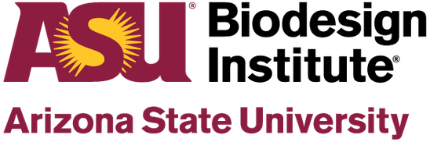
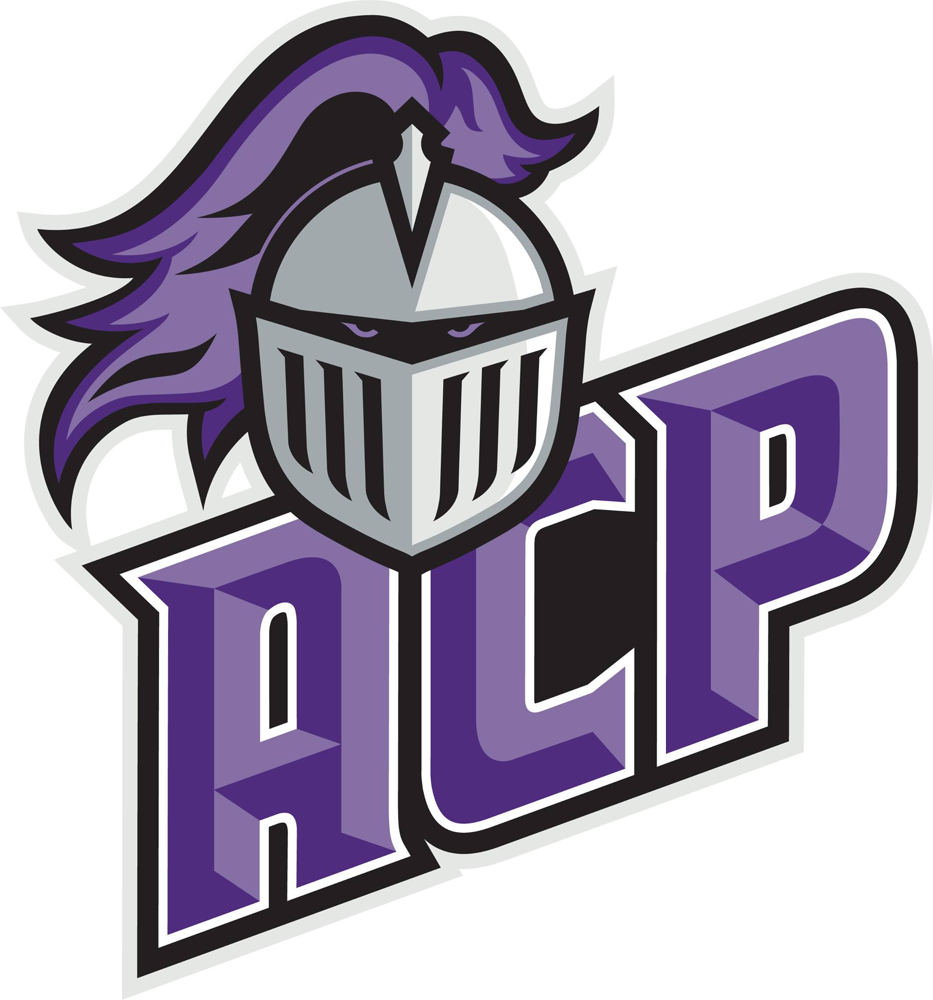
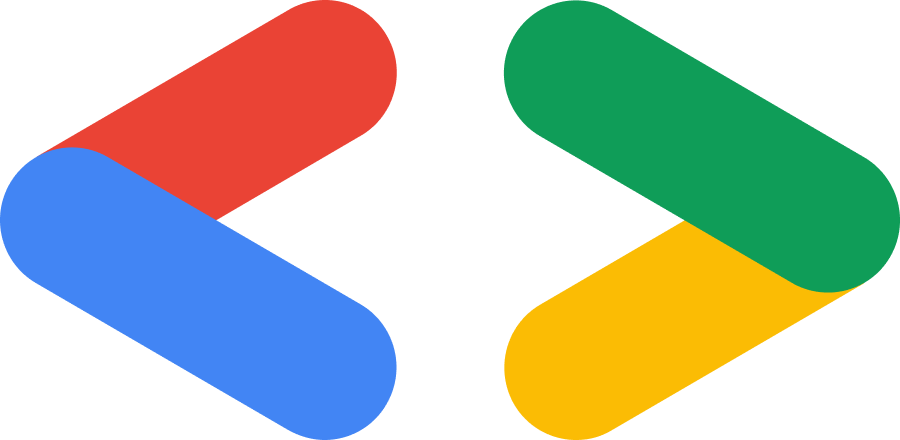
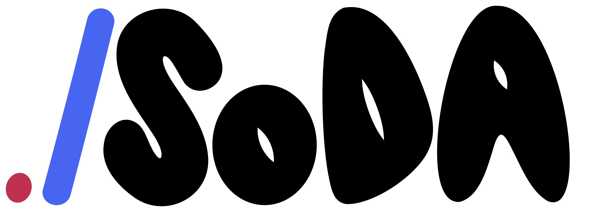

Systems
that Learn.
I'm Sai Rithwik Kukunuri, a rising senior at Arizona State University, majoring in Computer Science with a minor in Data Science, Honors (4.00 GPA). My background spans software engineering, ML systems, full-stack development, and data engineering.
I've built full-stack and cloud-native applications, supported Java/JavaFX projects as a Software Engineering TA, and contributed to data science and network security research. My work includes developing web platforms, improving software workflows, working with data, and helping teams build reliable applications. I’m interested in creating practical software systems that are useful, scalable, and easy to understand.
I'm interested in Software Development, AI/ML Systems, Data Science, Cloud Engineering, Research, and Data Engineering. I focus on building scalable, practical tools that connect software, data, and real-world problem solving.
- Assist 35+ students in CSE 360 with software engineering concepts, project requirements, debugging, testing, and development tools.
- Support Java and JavaFX projects in IntelliJ by helping students improve code quality, software design, implementation, and debugging.
- Guide students on software engineering tools and practices, including JUnit testing, Astah UML diagrams, Jira, GitHub, and Scrum workflows.

- Built a Python analysis pipeline with NumPy, SciPy, and Matplotlib to simulate bursty IPv4 network traffic and evaluate packet identifier behavior for network security analysis.
- Compared traditional Poisson traffic assumptions against MMPP-based bursty traffic models to identify security risks missed by prior analysis.
- Automated simulation, probability computation, and visualization workflows uncovering up to 63× higher vulnerability under real-world traffic patterns.
- Built a multimodal medical Q&A platform with Next.js, TypeScript, Flask, Qdrant, Groq APIs, and MedVidQA embeddings.
- Used Qdrant vector search to return top-5 relevant video segments, reducing latency by 30% and supporting 70 tokens/sec inference.
- Added text, image, voice, and video-frame inputs to return step-by-step answers with relevant video timestamps.
- Led a 4-member team to build a full-stack data integration platform with React, TypeScript, Flask, REST APIs, and AWS.
- Automated data collection and transfer between Arizona Technology Council’s two platforms, reducing reliance on manual workflows.
- Owned system architecture, sprint planning, and documentation, improving team coordination within a $2,500 project budget.
Built a full-stack AI-powered stock research platform that helps users search, analyze, and understand U.S. stocks using live market data, company insights, financial news, and an integrated AI assistant. The platform combines a responsive Next.js frontend with a FastAPI backend to provide stock dashboards, semantic search, market tracking, and finance-focused AI responses powered by Groq and Finnhub APIs.
- Built a responsive stock research dashboard for searching and analyzing 8,000+ U.S. stocks using natural-language queries and live market data.
- Developed a Groq-powered AI financial assistant that answers finance-related questions using stock prices, company metrics, earnings data, and market news.
- Implemented backend APIs with FastAPI to aggregate quotes, charts, company profiles, financial statistics, and news from multiple Finnhub API endpoints.
- Added semantic stock search using FAISS, allowing users to discover stocks through natural-language search instead of only ticker symbols.
- Integrated live company and market news to help users track recent financial updates and stock-related events.
- Designed a clean and responsive Next.js user interface for stock dashboards, market research, and AI-assisted analysis.
Engineered a JavaFX-based collaborative Q&A help system with multi-role access control for Students, Instructors, Admins, and Staff. Integrated an H2 SQL database for dynamic help article storage, retrieval, and permission-based content management, with secure credential handling through Bouncy Castle.
- Implemented OTP authentication and secure access protocols.
- Created JUnit test suites to validate core application features.
- Designed modular JavaFX components for authentication, content management, and user workflows.
- Developed backup, restore, and article grouping features for organized help content management.
- Led a 5-member Scrum team through sprint planning, Git workflows, testing, and debugging.


- Design digital branding and promotional materials for GDSC technical workshops and events, supporting outreach and student engagement.
- Created visual content for developer workshops, improving event communication for a 2,000+ member community.
- Recognized as a 2026 Pitchfork Awards Finalist for contributions to student organization initiatives.

- Lead visual branding for SoDA events and initiatives, translating marketing goals into cohesive and engaging design assets.
- Promote workshops and developer events for a 3,000+ member community through visual content that supports outreach and participation.
- Develop and maintain organization website features with React, TypeScript, and Flask, improving usability and functionality.